import sys
from pathlib import Path
sys.path.append(str(Path().cwd().parents[1]))
from typing import Dict, List, Tuple, Union
import matplotlib.pyplot as plt
import numpy as np
import pandas as pd
引言#
自 1993 年 Jegadeesh 和 Titman 提出并证明动量效应以来, 动量策略被广泛研究与应用。随着高频数据可获得性的增加以及相关技术的进步, 对动量效应的研究也逐渐拓展到日内领域，并被证明同样存在。
学术界对动量效应存在的原因至今仍有诸多争议, 但较有说服力的解释之一是价格对新信息的反应不足。即, 需要一定的时间逐步消化和反应新信息, 从而形成动量。造成反应不足的原因可能有,
处置效应, 即卖出盈利头寸而继续持有亏损头寸。这种行为产生的资金流动可能会减缓利好（利空）消息后，股价的抬升（下跌）速度。
投资者的注意力有限, 或是获取信息的成本较高。
无法快速交易导致价格发现的速度变慢。
Zarattini C, Aziz A 和 Barbon A 在论文《Beat the Market: An Effective Intraday Momentum Strategy for S&P500 ETF (SPY)》中介绍了一种由粘性供需失衡（sticky demand/supply imbalances) 引起的日内动量效应, 并以此为基础, 设计了一个简洁而明确的 ETF 交易策略。本文参考其逻辑，对上证 50、沪深 300、中证 500、中证 1000 进行测试, 发现了相同的规律。
数据获取#
etf_price: pd.DataFrame = pd.read_parquet("dataset/etf/hfq_etf_minute_price.parquet")
index_price: pd.DataFrame = pd.read_parquet("dataset/index/index_minute_price.parquet")
信号构造#
噪声区域#
日内动量策略通常源自买卖双方的力量在一段时间内, 存在持续且显著的不平衡。但由于股票市场的噪声水平较高, 故我们需要定义一个买卖双方力量平衡时, 价格的正常波动区域, 并称之为噪声区域。若价格在噪声区域中波动, 则认为不存在日内趋势。
一种合理的假设是, 当日内走势接近过去若干天相同时间段的平均走势, 则可以认为市场处于供需平衡状态。由此，我们可按如下步骤定义 \(\mathrm{t}\) 日的噪声区域。
计算过去 14 天每个分钟时点 hh:mm 的价格位移 (相对开盘价的收益率绝对值):
取过去 14 天 hh:mm 时点的位移平均值:
考虑到隔夜跳空缺口往往也预示着某种供需失衡, 因此进一步结合昨收盘价, 将 \(\mathrm{t}\) 日 hh:mm 时点的噪声区域的上、下边界分别定义为:
则 \(\mathrm{t}\) 日 hh:mm 时点的噪声区域为:
如果此时的价格位于噪声区域内, 则说明供需处于平衡状态; 当价格突破噪声区域的上边界, 说明存在大量买入需求, 价格可能进一步上升; 当价格突破噪声区域的下边界, 说明存在大量抛售压力, 价格可能进一步下降。
from src.SignalMaker import NoiseArea
etf_price.head()
| trade_time | code | open | high | low | close | volume | amount | |
|---|---|---|---|---|---|---|---|---|
| 0 | 2013-10-08 09:30:00 | 510050.SH | 1.928290 | 1.928290 | 1.928290 | 1.928290 | 1152800.0 | 1948232.0 |
| 1 | 2013-10-08 09:30:00 | 510300.SH | 2.476188 | 2.476188 | 2.476188 | 2.476188 | 224101.0 | 547255.0 |
| 2 | 2013-10-08 09:30:00 | 510500.SH | 1.099000 | 1.099000 | 1.099000 | 1.099000 | 0.0 | 0.0 |
| 3 | 2013-10-08 09:31:00 | 510500.SH | 1.096000 | 1.096000 | 1.089000 | 1.096000 | 364800.0 | 399734.0 |
| 4 | 2013-10-08 09:31:00 | 510300.SH | 2.486328 | 2.486328 | 2.476188 | 2.485314 | 1066494.0 | 2611913.0 |
index_price.head()
| trade_time | code | close | open | high | low | volume | amount | |
|---|---|---|---|---|---|---|---|---|
| 0 | 2013-10-08 09:30:00 | 000016.SH | 1637.975 | 1637.9750 | 1637.9750 | 1637.9750 | 23522400.0 | 1.514756e+08 |
| 1 | 2013-10-08 09:30:00 | 000300.SH | 2406.415 | 2406.4150 | 2406.4150 | 2406.4150 | 77130500.0 | 7.254123e+08 |
| 2 | 2013-10-08 09:30:00 | 000905.SH | 3875.522 | 3875.5220 | 3875.5220 | 3875.5220 | 37016000.0 | 3.676665e+08 |
| 3 | 2013-10-08 09:31:00 | 000300.SH | 2399.630 | 2403.9661 | 2403.9661 | 2399.5911 | 127033500.0 | 1.068587e+09 |
| 4 | 2013-10-08 09:31:00 | 000016.SH | 1632.459 | 1636.1470 | 1636.1470 | 1632.2679 | 59359400.0 | 3.609640e+08 |
# 使用etf分钟数据生成信号
etf_signal: pd.DataFrame = NoiseArea(etf_price).fit(14)
# 使用指数分钟数据生成信号
index_signal: pd.DataFrame = NoiseArea(index_price).fit(14)
使用指数生成信号，在对应的etf上进行交易
etf_codes: List[str] = ["510300.SH", "510050.SH", "510500.SH", "159845.SZ"]
index_codes: List[str] = ["000300.SH", "000016.SH", "000905.SH", "000852.SH"]
ohlcv: pd.DataFrame = index_price.copy()
ohlcv["code"] = ohlcv["code"].map(dict(zip(index_codes, etf_codes)))
# 信号拼接
combo_data: pd.DataFrame = NoiseArea(ohlcv).concat_signal(etf_price)
combo_data.set_index("trade_time", inplace=True)
combo_data.head()
| code | open | high | low | close | volume | amount | upperbound | signal | lowerbound | vwap | |
|---|---|---|---|---|---|---|---|---|---|---|---|
| trade_time | |||||||||||
| 2013-10-08 09:30:00 | 510050.SH | 1.928290 | 1.928290 | 1.928290 | 1.928290 | 1152800.0 | 1948232.0 | NaN | 1637.975 | NaN | 1637.975000 |
| 2013-10-08 09:30:00 | 510300.SH | 2.476188 | 2.476188 | 2.476188 | 2.476188 | 224101.0 | 547255.0 | NaN | 2406.415 | NaN | 2406.415000 |
| 2013-10-08 09:30:00 | 510500.SH | 1.099000 | 1.099000 | 1.099000 | 1.099000 | 0.0 | 0.0 | NaN | 3875.522 | NaN | 3875.522000 |
| 2013-10-08 09:31:00 | 510050.SH | 1.926008 | 1.929431 | 1.922585 | 1.922585 | 6658217.0 | 11235951.0 | NaN | 1632.459 | NaN | 1634.024477 |
| 2013-10-08 09:31:00 | 510300.SH | 2.486328 | 2.486328 | 2.476188 | 2.485314 | 1066494.0 | 2611913.0 | NaN | 2399.630 | NaN | 2402.193285 |
基础策略#
我们以分钟K线的收盘价突破噪声区域边界作为开仓信号。具体地,当收盘价在噪声区域内, 认为是合理波动, 不存在趋势, 无信号; 当收盘价在噪声区域上边界 (UpperBound) 上方, 认为向上趋势形成, 发出做多信号, 并以下一分钟的开盘价开多仓; 当收盘价在噪声区域下边界 (LowerBound) 下方, 认为向下趋势形成, 发出做空信号, 并以下一分钟的开盘价开空仓。
由于是日内的动量策略,我们不持仓过夜,因此设定如下的平仓规则。当分钟K线的收盘价突破当前仓位的对向边界或是当日收盘, 则平仓。具体地, 若当前是多头仓位, 而价格突破噪声区域下边界 (LowerBound), 以下一分钟开盘价平仓; 若价格一直在下边界之上，以当日收盘价平仓。反之，若当前是空头仓位，而价格突破噪声区域上边界 (UpperBound), 以下一分钟开盘价平仓; 若价格一直在上边界之下, 以当日收盘价平仓。
为避免价格在噪声边界附近震荡时,信号过于频繁。我们规定,仅在 1 小时K线,即每日的 10:29、11:29、13:59，三个时点上，判断是否开仓。不过，为了及时止损，一旦在收盘前触发平仓信号, 则立即以下一分钟的开盘价平仓。
from src.bt_template import run_template_strategy
from src.plotting import plot_cumulative_return, plot_intraday_signal
from src.strategy import NoiseRangeStrategy
from src.utils import get_strategy_cumulative_return, trans_minute_to_daily
/root/miniconda3/envs/dev/lib/python3.10/site-packages/pyfolio/pos.py:25: UserWarning: Module "zipline.assets" not found; multipliers will not be applied to position notionals.
warnings.warn(
这里展示的是沪深300指数在2013-10-25的分钟信号情况
plot_intraday_signal(combo_data.query('code=="510300.SH"'), "2013-10-25")
<Axes: title={'center': 'Signal on 2013-10-25'}, xlabel='trade_time'>
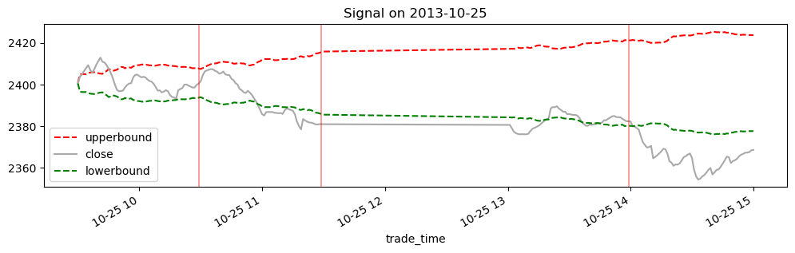
所有回测均收取万一的手续费及万一点五的印花税及万一的滑点。且只能以100的正数倍买入标的
target_code: str = "510300.SH"
noiserange_strat = run_template_strategy(
combo_data, target_code, NoiseRangeStrategy, strategy_kwargs={"verbose": False}
)
2024-08-21 10:50:52.982 | INFO | src.engine:load_data:119 - 开始加载数据...
2024-08-21 10:50:53.087 | SUCCESS | src.engine:load_data:134 - 数据加载完毕！
plot_cumulative_return(
noiserange_strat,
combo_data.query("code==@target_code")["close"],
title="NoiseRangeStrategy",
)
<Axes: title={'center': 'NoiseRangeStrategy'}, xlabel='trade_time'>
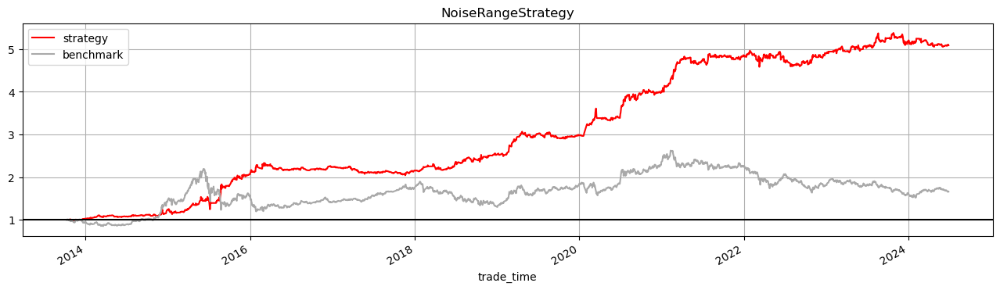
改进策略1：调整止损规则#
虽然全区间内, 策略效果颇佳, 但在某些市场状态下, 却也容易面临较大的单日亏损。
因此, 我们考虑设置更严格的止损规则, 而最直接的方法就是将同向边界作为止损线。 即，做多（空）时价格回到上（下）边界时平仓。另一方面，有诸多研究表明，成交量加权平均价格 (VWAP) 也是一个有效的识别日内供需平衡变化的指标。因此, 我们将其与噪声区域的边界结合, 得到最终的止损线。
做多时, 止损线为上边界和 VWAP 两者的较大值。即,
做空时, 止损线为下边界和 VWAP 两者的较小值。即,
from src.strategy import NoiseRangeVWAPStrategy
noisevwaprange_strat = run_template_strategy(
combo_data, target_code, NoiseRangeVWAPStrategy, strategy_kwargs={"verbose": False}
)
2024-08-21 10:52:42.257 | INFO | src.engine:load_data:119 - 开始加载数据...
2024-08-21 10:52:42.397 | SUCCESS | src.engine:load_data:134 - 数据加载完毕！
plot_cumulative_return(
noisevwaprange_strat,
combo_data.query("code==@target_code")["close"],
title="NoiseRangeVWAPStrategy",
)
<Axes: title={'center': 'NoiseRangeVWAPStrategy'}, xlabel='trade_time'>
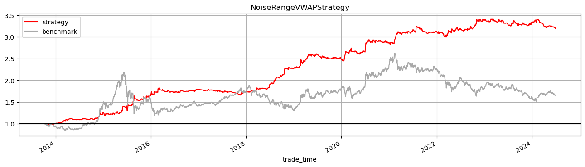
对比基础策略与改进策略#
noisevwaprange_returns: pd.Series = get_strategy_cumulative_return(
noisevwaprange_strat, 1
)
noiserange_returns: pd.Series = get_strategy_cumulative_return(noiserange_strat, 1)
noisevwaprange_returns.plot(
label="NoiseRangeVWAPStrategy", figsize=(16, 4), color="Crimson"
)
noiserange_returns.plot(label="NoiseRangeStrategy", color="IndianRed").axhline(
1, color="black", lw=0.5
)
daily_close: pd.Series = trans_minute_to_daily(
combo_data.query("code==@target_code")["close"]
)
(daily_close / daily_close.iloc[0]).plot(label="Benchmark", color="darkgray")
plt.legend()
<matplotlib.legend.Legend at 0x7fcb009f8040>
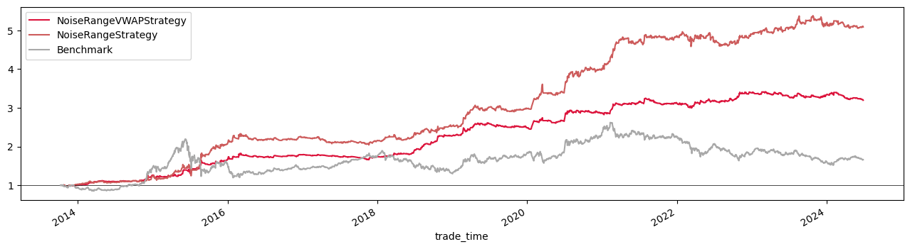
有底仓的ETF日内动量策略#
假设底仓仓位为50% ,当策略发出做多信号时,用剩余的50%仓位买入 ETF 至平仓信号触发或收盘, 再行卖出; 当策略发出做空信号时, 卖出已有的50%仓位至平仓信号触发或收盘，再买入 ETF，回到 50%仓位。即，日间始终保持仓位不变，试图通过日内交易相对买入持有 ETF 产生增强。由于该模式下无法使用杠杆, 因此我们只测试改进策略 1 。 此外, 日内完成一次交易后, 持有的均是当日买入的仓位, 无法再行交易, 故回测时只取每天的第一个信号, 交易成本同样设为单边万一。
from src.strategy import BasePositionStrategt
bp_strat = run_template_strategy(
combo_data,
target_code,
BasePositionStrategt,
strategy_kwargs={"verbose": False},
)
2024-08-21 10:54:34.290 | INFO | src.engine:load_data:119 - 开始加载数据...
2024-08-21 10:54:34.441 | SUCCESS | src.engine:load_data:134 - 数据加载完毕！
plot_cumulative_return(
bp_strat,
combo_data.query("code==@target_code")["close"],
title="BasePositionStrategt",
)
<Axes: title={'center': 'BasePositionStrategt'}, xlabel='trade_time'>
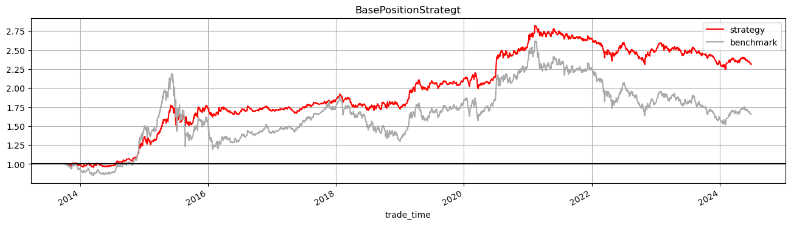
多标的下的底仓策略#
这里使用多个标的执行有底仓的ETF动量策略,每个标的等权持仓，独立执行策略。
hold_num: int = len(etf_codes)
multi_asset_strat = run_template_strategy(
combo_data,
etf_codes,
BasePositionStrategt,
strategy_kwargs={"verbose": False, "hold_num": hold_num},
)
2024-08-21 10:56:30.175 | INFO | src.engine:load_data:119 - 开始加载数据...
2024-08-21 10:56:30.680 | SUCCESS | src.engine:load_data:134 - 数据加载完毕！
plot_cumulative_return(
multi_asset_strat,
combo_data.query("code==@target_code")["close"],
title="BasePositionStrategt",
)
<Axes: title={'center': 'BasePositionStrategt'}, xlabel='trade_time'>
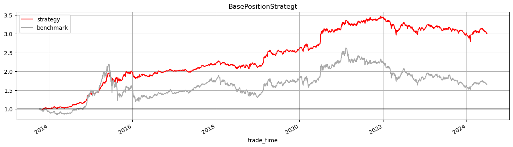
查看不同标的在不同策略下的表现情况#
有底仓ETF策略下不同标的的表现#
from src.performance import multi_asset_show_perf_stats,multi_strategy_show_perf_stats
multi_asset_dict: Dict = {
code: run_template_strategy(
combo_data,
code,
BasePositionStrategt,
strategy_kwargs={"verbose": False, "hold_num": 1},
)
for code in etf_codes
}
2024-08-21 11:01:12.892 | INFO | src.engine:load_data:119 - 开始加载数据...
2024-08-21 11:01:13.034 | SUCCESS | src.engine:load_data:134 - 数据加载完毕！
2024-08-21 11:03:07.549 | INFO | src.engine:load_data:119 - 开始加载数据...
2024-08-21 11:03:07.694 | SUCCESS | src.engine:load_data:134 - 数据加载完毕！
2024-08-21 11:05:04.069 | INFO | src.engine:load_data:119 - 开始加载数据...
2024-08-21 11:05:04.212 | SUCCESS | src.engine:load_data:134 - 数据加载完毕！
2024-08-21 11:06:58.784 | INFO | src.engine:load_data:119 - 开始加载数据...
2024-08-21 11:06:58.828 | SUCCESS | src.engine:load_data:134 - 数据加载完毕！
for code, strat in multi_asset_dict.items():
plot_cumulative_return(
strat,
combo_data.query("code==@code")["close"],
title=f"{code} BasePositionStrategt",
)
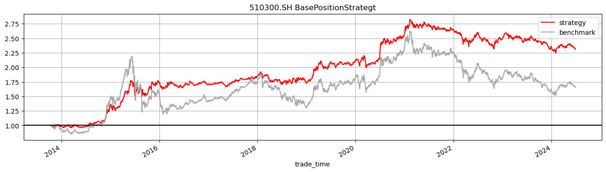
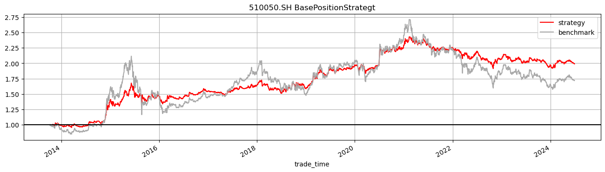
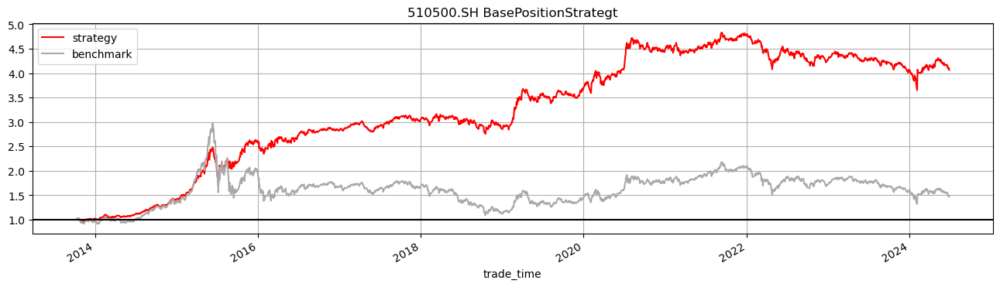
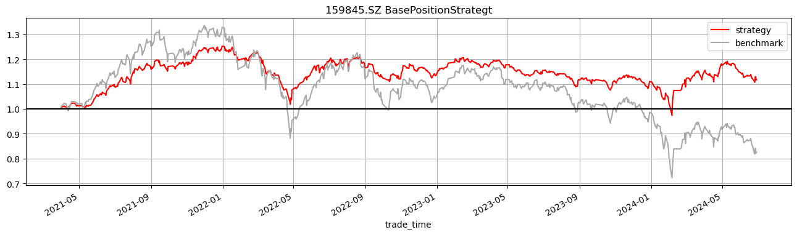
multi_asset_show_perf_stats(multi_asset_dict,combo_data)
/root/miniconda3/envs/dev/lib/python3.10/site-packages/pyfolio/plotting.py:670: FutureWarning: Setting an item of incompatible dtype is deprecated and will raise an error in a future version of pandas. Value '8.478%' has dtype incompatible with float64, please explicitly cast to a compatible dtype first.
perf_stats.loc[stat, column] = str(np.round(value * 100, 3)) + "%"
/root/miniconda3/envs/dev/lib/python3.10/site-packages/pyfolio/plotting.py:670: FutureWarning: Setting an item of incompatible dtype is deprecated and will raise an error in a future version of pandas. Value '6.898%' has dtype incompatible with float64, please explicitly cast to a compatible dtype first.
perf_stats.loc[stat, column] = str(np.round(value * 100, 3)) + "%"
/root/miniconda3/envs/dev/lib/python3.10/site-packages/pyfolio/plotting.py:670: FutureWarning: Setting an item of incompatible dtype is deprecated and will raise an error in a future version of pandas. Value '14.587%' has dtype incompatible with float64, please explicitly cast to a compatible dtype first.
perf_stats.loc[stat, column] = str(np.round(value * 100, 3)) + "%"
/root/miniconda3/envs/dev/lib/python3.10/site-packages/pyfolio/plotting.py:670: FutureWarning: Setting an item of incompatible dtype is deprecated and will raise an error in a future version of pandas. Value '3.602%' has dtype incompatible with float64, please explicitly cast to a compatible dtype first.
perf_stats.loc[stat, column] = str(np.round(value * 100, 3)) + "%"
| 510300.SH | 510050.SH | 510500.SH | 159845.SZ | |
|---|---|---|---|---|
| Backtest | Backtest | Backtest | Backtest | |
| Annual return | 8.478% | 6.898% | 14.587% | 3.602% |
| Cumulative returns | 131.467% | 98.97% | 306.609% | 11.687% |
| Annual volatility | 12.899% | 12.926% | 14.818% | 11.561% |
| Sharpe ratio | 0.695037 | 0.580156 | 0.992573 | 0.36353 |
| Calmar ratio | 0.416129 | 0.325186 | 0.465718 | 0.161611 |
| Stability | 0.806353 | 0.787233 | 0.767297 | 0.000868 |
| Max drawdown | -20.373% | -21.213% | -31.321% | -22.291% |
| Omega ratio | 1.147 | 1.123363 | 1.218351 | 1.065495 |
| Sortino ratio | 1.177381 | 1.005646 | 1.680749 | 0.594393 |
| Skew | 1.165209 | 1.708093 | 1.362279 | 1.236517 |
| Kurtosis | 11.219676 | 16.020987 | 14.04187 | 7.45094 |
| Tail ratio | 1.53672 | 1.476589 | 1.565541 | 1.457257 |
| Daily value at risk | -1.59% | -1.599% | -1.809% | -1.44% |
| Alpha | 0.052236 | 0.033961 | 0.11735 | 0.061353 |
| Beta | 0.501772 | 0.518886 | 0.489366 | 0.473511 |
不同策略下的标的表现#
strategys: List = [NoiseRangeStrategy, NoiseRangeVWAPStrategy, BasePositionStrategt]
multi_strategy_dict: Dict = {
code: {
s.__name__: run_template_strategy(
combo_data,
code,
s,
strategy_kwargs={"verbose": False, "hold_num": 1},
)
for s in strategys
}
for code in etf_codes
}
2024-08-21 11:07:35.443 | INFO | src.engine:load_data:119 - 开始加载数据...
2024-08-21 11:07:35.583 | SUCCESS | src.engine:load_data:134 - 数据加载完毕！
2024-08-21 11:09:24.926 | INFO | src.engine:load_data:119 - 开始加载数据...
2024-08-21 11:09:25.069 | SUCCESS | src.engine:load_data:134 - 数据加载完毕！
2024-08-21 11:11:16.460 | INFO | src.engine:load_data:119 - 开始加载数据...
2024-08-21 11:11:16.606 | SUCCESS | src.engine:load_data:134 - 数据加载完毕！
2024-08-21 11:13:12.135 | INFO | src.engine:load_data:119 - 开始加载数据...
2024-08-21 11:13:12.288 | SUCCESS | src.engine:load_data:134 - 数据加载完毕！
2024-08-21 11:14:58.987 | INFO | src.engine:load_data:119 - 开始加载数据...
2024-08-21 11:14:59.138 | SUCCESS | src.engine:load_data:134 - 数据加载完毕！
2024-08-21 11:16:51.409 | INFO | src.engine:load_data:119 - 开始加载数据...
2024-08-21 11:16:51.561 | SUCCESS | src.engine:load_data:134 - 数据加载完毕！
2024-08-21 11:18:48.492 | INFO | src.engine:load_data:119 - 开始加载数据...
2024-08-21 11:18:48.637 | SUCCESS | src.engine:load_data:134 - 数据加载完毕！
2024-08-21 11:20:35.234 | INFO | src.engine:load_data:119 - 开始加载数据...
2024-08-21 11:20:35.371 | SUCCESS | src.engine:load_data:134 - 数据加载完毕！
2024-08-21 11:22:28.051 | INFO | src.engine:load_data:119 - 开始加载数据...
2024-08-21 11:22:28.198 | SUCCESS | src.engine:load_data:134 - 数据加载完毕！
2024-08-21 11:24:20.102 | INFO | src.engine:load_data:119 - 开始加载数据...
2024-08-21 11:24:20.149 | SUCCESS | src.engine:load_data:134 - 数据加载完毕！
2024-08-21 11:24:52.425 | INFO | src.engine:load_data:119 - 开始加载数据...
2024-08-21 11:24:52.469 | SUCCESS | src.engine:load_data:134 - 数据加载完毕！
2024-08-21 11:25:30.807 | INFO | src.engine:load_data:119 - 开始加载数据...
2024-08-21 11:25:30.852 | SUCCESS | src.engine:load_data:134 - 数据加载完毕！
沪深300ETF#
code:str = "510300.SH"
multi_strategy_show_perf_stats(multi_strategy_dict[code],combo_data)
/root/miniconda3/envs/dev/lib/python3.10/site-packages/pyfolio/plotting.py:670: FutureWarning: Setting an item of incompatible dtype is deprecated and will raise an error in a future version of pandas. Value '17.088%' has dtype incompatible with float64, please explicitly cast to a compatible dtype first.
perf_stats.loc[stat, column] = str(np.round(value * 100, 3)) + "%"
/root/miniconda3/envs/dev/lib/python3.10/site-packages/pyfolio/plotting.py:670: FutureWarning: Setting an item of incompatible dtype is deprecated and will raise an error in a future version of pandas. Value '11.925%' has dtype incompatible with float64, please explicitly cast to a compatible dtype first.
perf_stats.loc[stat, column] = str(np.round(value * 100, 3)) + "%"
/root/miniconda3/envs/dev/lib/python3.10/site-packages/pyfolio/plotting.py:670: FutureWarning: Setting an item of incompatible dtype is deprecated and will raise an error in a future version of pandas. Value '8.478%' has dtype incompatible with float64, please explicitly cast to a compatible dtype first.
perf_stats.loc[stat, column] = str(np.round(value * 100, 3)) + "%"
| NoiseRangeStrategy | NoiseRangeVWAPStrategy | BasePositionStrategt | |
|---|---|---|---|
| Backtest | Backtest | Backtest | |
| Annual return | 17.088% | 11.925% | 8.478% |
| Cumulative returns | 408.867% | 219.593% | 131.467% |
| Annual volatility | 13.764% | 9.755% | 12.899% |
| Sharpe ratio | 1.214926 | 1.20328 | 0.695037 |
| Calmar ratio | 0.894585 | 1.334872 | 0.416129 |
| Stability | 0.938345 | 0.935783 | 0.806353 |
| Max drawdown | -19.102% | -8.933% | -20.373% |
| Omega ratio | 1.355958 | 1.397483 | 1.147 |
| Sortino ratio | 1.998399 | 2.490129 | 1.177381 |
| Skew | 1.032503 | 3.046246 | 1.165209 |
| Kurtosis | 33.296559 | 28.125496 | 11.219676 |
| Tail ratio | 1.338844 | 1.968731 | 1.53672 |
| Daily value at risk | -1.668% | -1.182% | -1.59% |
| Alpha | 0.18181 | 0.123002 | 0.052236 |
| Beta | 0.001576 | 0.017448 | 0.501772 |
for strategy_name, strat in multi_strategy_dict[code].items():
plot_cumulative_return(
strat,
combo_data.query("code==@code")["close"],
title=f"{code} {strategy_name}",
)
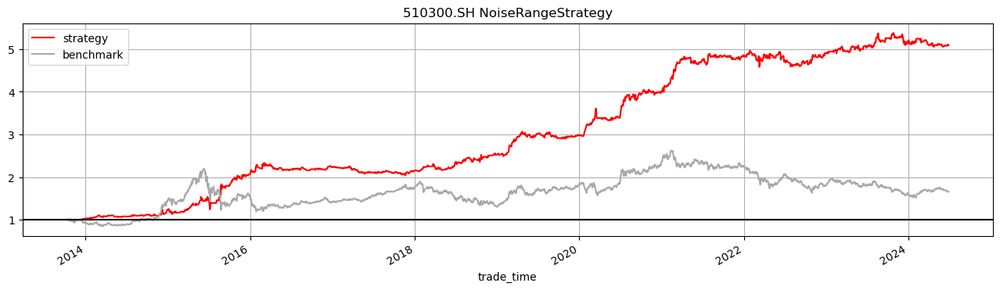
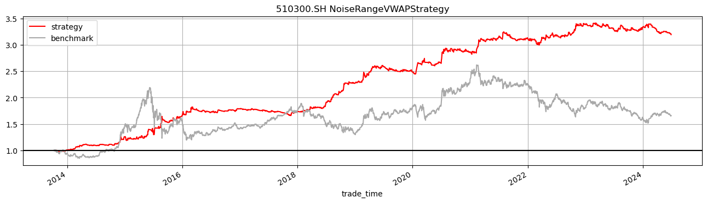
中证500ETF#
code:str = "510500.SH"
multi_strategy_show_perf_stats(multi_strategy_dict[code],combo_data)
/root/miniconda3/envs/dev/lib/python3.10/site-packages/pyfolio/plotting.py:670: FutureWarning: Setting an item of incompatible dtype is deprecated and will raise an error in a future version of pandas. Value '28.452%' has dtype incompatible with float64, please explicitly cast to a compatible dtype first.
perf_stats.loc[stat, column] = str(np.round(value * 100, 3)) + "%"
/root/miniconda3/envs/dev/lib/python3.10/site-packages/pyfolio/plotting.py:670: FutureWarning: Setting an item of incompatible dtype is deprecated and will raise an error in a future version of pandas. Value '23.278%' has dtype incompatible with float64, please explicitly cast to a compatible dtype first.
perf_stats.loc[stat, column] = str(np.round(value * 100, 3)) + "%"
/root/miniconda3/envs/dev/lib/python3.10/site-packages/pyfolio/plotting.py:670: FutureWarning: Setting an item of incompatible dtype is deprecated and will raise an error in a future version of pandas. Value '14.587%' has dtype incompatible with float64, please explicitly cast to a compatible dtype first.
perf_stats.loc[stat, column] = str(np.round(value * 100, 3)) + "%"
| NoiseRangeStrategy | NoiseRangeVWAPStrategy | BasePositionStrategt | |
|---|---|---|---|
| Backtest | Backtest | Backtest | |
| Annual return | 28.452% | 23.278% | 14.587% |
| Cumulative returns | 1218.874% | 763.538% | 306.609% |
| Annual volatility | 16.89% | 11.936% | 14.818% |
| Sharpe ratio | 1.567557 | 1.812455 | 0.992573 |
| Calmar ratio | 1.582224 | 1.976939 | 0.465718 |
| Stability | 0.846386 | 0.878077 | 0.767297 |
| Max drawdown | -17.982% | -11.775% | -31.321% |
| Omega ratio | 1.515821 | 1.723733 | 1.218351 |
| Sortino ratio | 2.536442 | 4.271092 | 1.680749 |
| Skew | 0.335 | 4.465326 | 1.362279 |
| Kurtosis | 40.003616 | 45.891176 | 14.04187 |
| Tail ratio | 1.312157 | 1.958655 | 1.565541 |
| Daily value at risk | -2.023% | -1.418% | -1.809% |
| Alpha | 0.304859 | 0.241622 | 0.11735 |
| Beta | -0.020095 | -0.002516 | 0.489366 |
for strategy_name, strat in multi_strategy_dict[code].items():
plot_cumulative_return(
strat,
combo_data.query("code==@code")["close"],
title=f"{code} {strategy_name}",
)
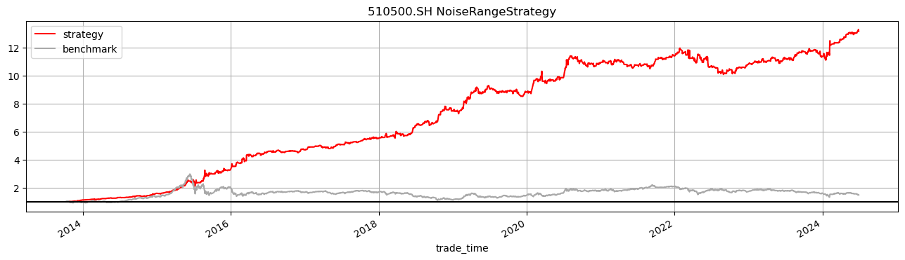
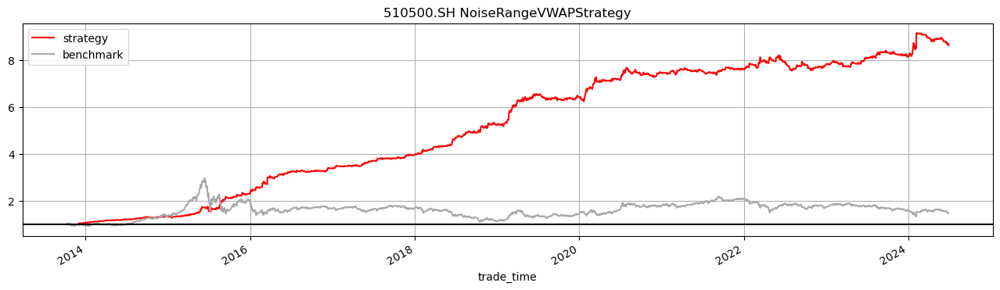
上证50ETF#
code: str = "510050.SH"
multi_strategy_show_perf_stats(multi_strategy_dict[code],combo_data)
/root/miniconda3/envs/dev/lib/python3.10/site-packages/pyfolio/plotting.py:670: FutureWarning: Setting an item of incompatible dtype is deprecated and will raise an error in a future version of pandas. Value '16.548%' has dtype incompatible with float64, please explicitly cast to a compatible dtype first.
perf_stats.loc[stat, column] = str(np.round(value * 100, 3)) + "%"
/root/miniconda3/envs/dev/lib/python3.10/site-packages/pyfolio/plotting.py:670: FutureWarning: Setting an item of incompatible dtype is deprecated and will raise an error in a future version of pandas. Value '7.707%' has dtype incompatible with float64, please explicitly cast to a compatible dtype first.
perf_stats.loc[stat, column] = str(np.round(value * 100, 3)) + "%"
/root/miniconda3/envs/dev/lib/python3.10/site-packages/pyfolio/plotting.py:670: FutureWarning: Setting an item of incompatible dtype is deprecated and will raise an error in a future version of pandas. Value '6.898%' has dtype incompatible with float64, please explicitly cast to a compatible dtype first.
perf_stats.loc[stat, column] = str(np.round(value * 100, 3)) + "%"
| NoiseRangeStrategy | NoiseRangeVWAPStrategy | BasePositionStrategt | |
|---|---|---|---|
| Backtest | Backtest | Backtest | |
| Annual return | 16.548% | 7.707% | 6.898% |
| Cumulative returns | 385.177% | 115.057% | 98.97% |
| Annual volatility | 13.337% | 9.47% | 12.926% |
| Sharpe ratio | 1.215066 | 0.830933 | 0.580156 |
| Calmar ratio | 0.822596 | 0.577931 | 0.325186 |
| Stability | 0.964642 | 0.822307 | 0.787233 |
| Max drawdown | -20.117% | -13.336% | -21.213% |
| Omega ratio | 1.350879 | 1.267442 | 1.123363 |
| Sortino ratio | 1.948638 | 1.638877 | 1.005646 |
| Skew | 0.471241 | 2.782085 | 1.708093 |
| Kurtosis | 22.705266 | 30.285925 | 16.020987 |
| Tail ratio | 1.337998 | 1.693254 | 1.476589 |
| Daily value at risk | -1.616% | -1.162% | -1.599% |
| Alpha | 0.174665 | 0.081607 | 0.033961 |
| Beta | 0.012658 | 0.002873 | 0.518886 |
for strategy_name, strat in multi_strategy_dict[code].items():
plot_cumulative_return(
strat,
combo_data.query("code==@code")["close"],
title=f"{code} {strategy_name}",
)
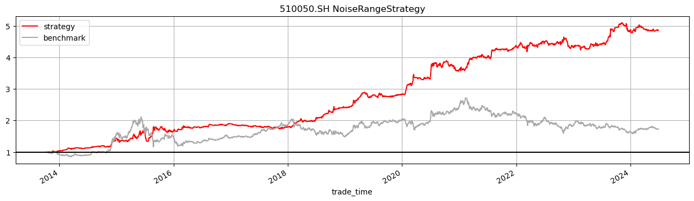
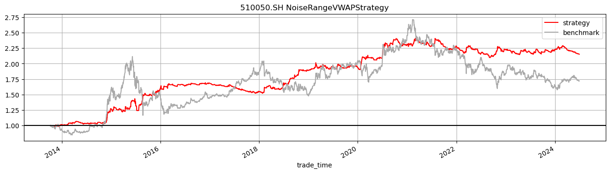
中证1000ETF#
净值突然跳空是复权的原因
code:str = "159845.SZ"
multi_strategy_show_perf_stats(multi_strategy_dict[code],combo_data)
/root/miniconda3/envs/dev/lib/python3.10/site-packages/pyfolio/plotting.py:670: FutureWarning: Setting an item of incompatible dtype is deprecated and will raise an error in a future version of pandas. Value '16.676%' has dtype incompatible with float64, please explicitly cast to a compatible dtype first.
perf_stats.loc[stat, column] = str(np.round(value * 100, 3)) + "%"
/root/miniconda3/envs/dev/lib/python3.10/site-packages/pyfolio/plotting.py:670: FutureWarning: Setting an item of incompatible dtype is deprecated and will raise an error in a future version of pandas. Value '15.115%' has dtype incompatible with float64, please explicitly cast to a compatible dtype first.
perf_stats.loc[stat, column] = str(np.round(value * 100, 3)) + "%"
/root/miniconda3/envs/dev/lib/python3.10/site-packages/pyfolio/plotting.py:670: FutureWarning: Setting an item of incompatible dtype is deprecated and will raise an error in a future version of pandas. Value '3.602%' has dtype incompatible with float64, please explicitly cast to a compatible dtype first.
perf_stats.loc[stat, column] = str(np.round(value * 100, 3)) + "%"
| NoiseRangeStrategy | NoiseRangeVWAPStrategy | BasePositionStrategt | |
|---|---|---|---|
| Backtest | Backtest | Backtest | |
| Annual return | 16.676% | 15.115% | 3.602% |
| Cumulative returns | 61.876% | 55.21% | 11.687% |
| Annual volatility | 12.227% | 8.264% | 11.561% |
| Sharpe ratio | 1.322575 | 1.744641 | 0.36353 |
| Calmar ratio | 1.335866 | 1.476587 | 0.161611 |
| Stability | 0.718932 | 0.764195 | 0.000868 |
| Max drawdown | -12.483% | -10.237% | -22.291% |
| Omega ratio | 1.348184 | 1.526737 | 1.065495 |
| Sortino ratio | 2.055576 | 3.48503 | 0.594393 |
| Skew | 0.776719 | 2.444956 | 1.236517 |
| Kurtosis | 18.219977 | 17.603072 | 7.45094 |
| Tail ratio | 1.181468 | 1.760984 | 1.457257 |
| Daily value at risk | -1.476% | -0.984% | -1.44% |
| Alpha | 0.172319 | 0.153159 | 0.061353 |
| Beta | -0.077243 | -0.048787 | 0.473511 |
for strategy_name, strat in multi_strategy_dict[code].items():
plot_cumulative_return(
strat,
combo_data.query("code==@code")["close"],
title=f"{code} {strategy_name}",
)
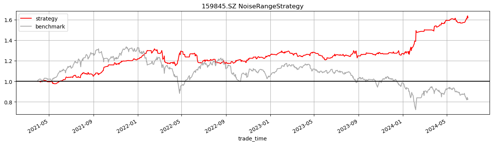
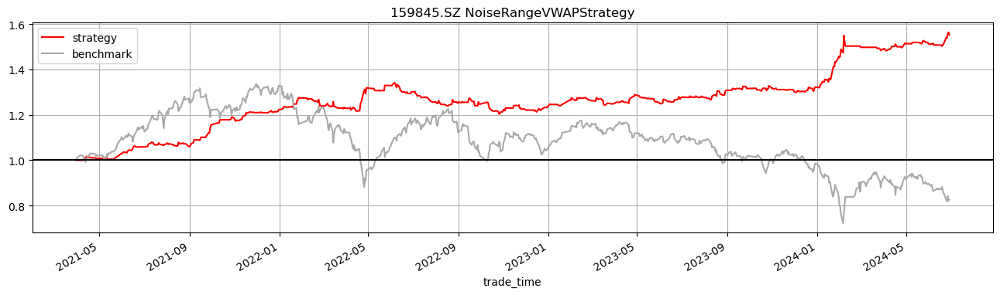